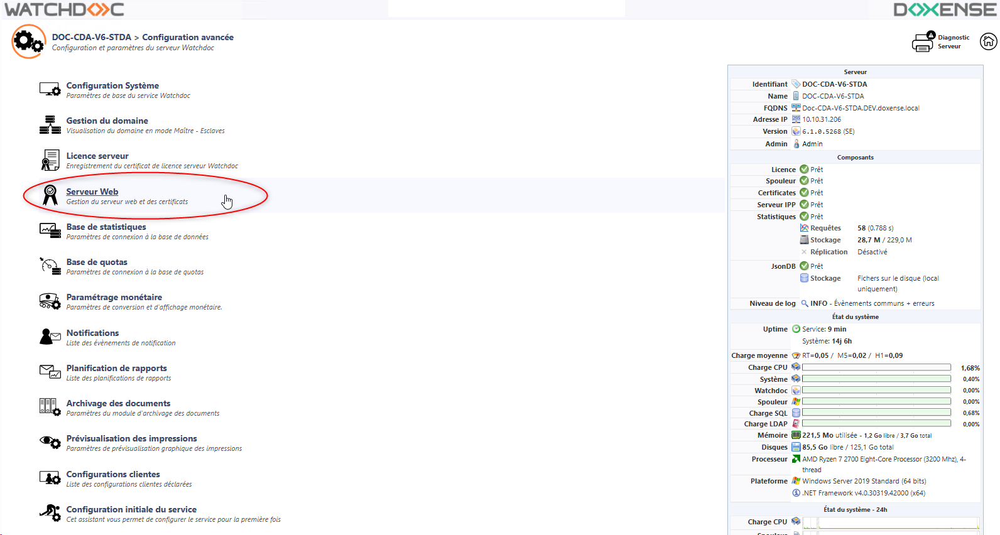
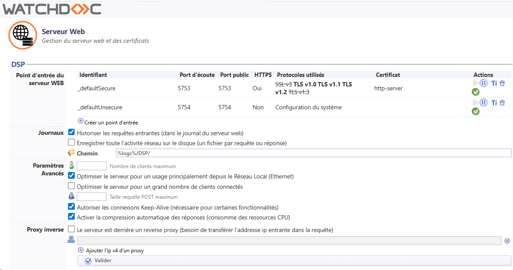
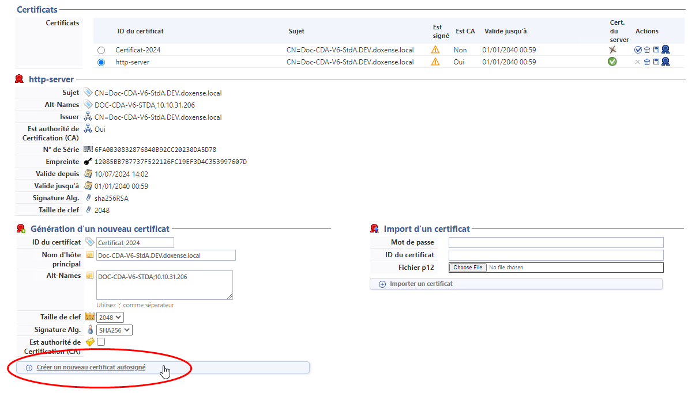
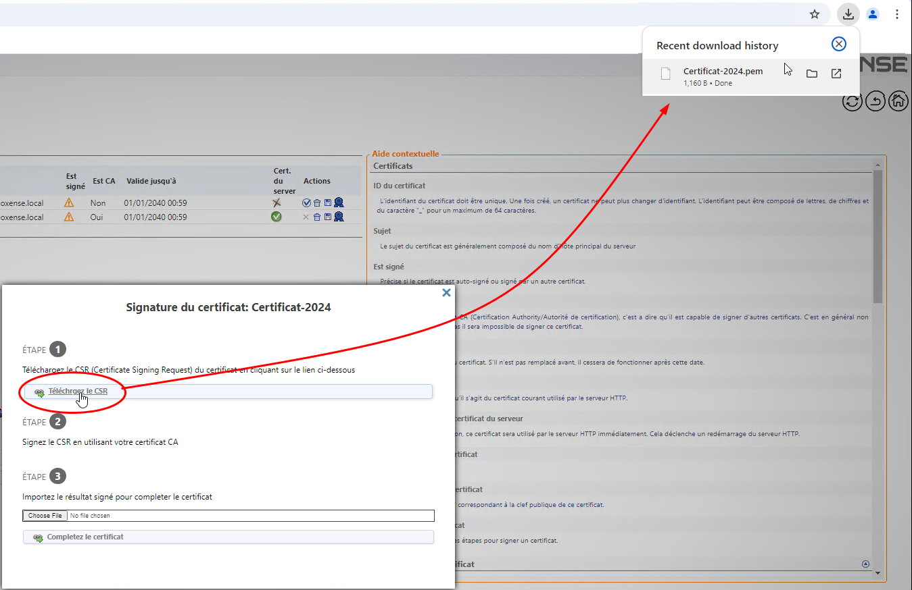
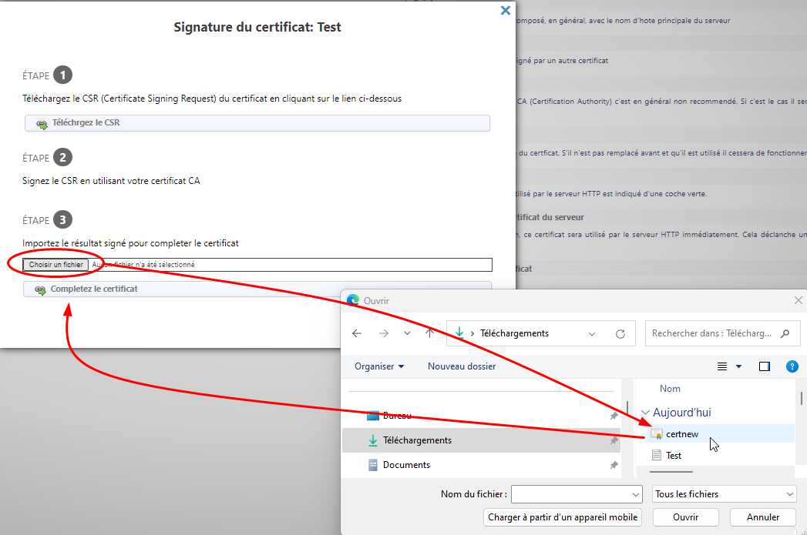
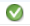
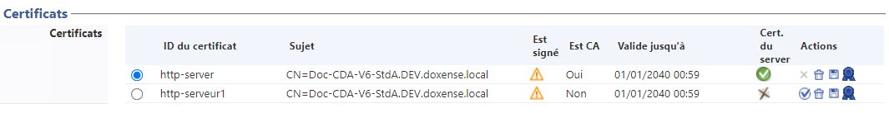

Principe
Apparue dans la version 6.1.0.5262, cette section rassemble les paramètres relatifs au serveur Web de Watchdoc et aux certificats qui en sécurisent l'accès.
Dans les versions précédentes, la section DSP se situe dans l'interface Configuration System (Menu principal > section Configuration, Configuration avancée > Configuration Système > section DSP).
Accéder à l'interface de configuration
-
Depuis le Menu principal de l'interface d'administration, section Configuration, cliquez sur Configuration avancée ;
-
dans l'interface [Nom_du_serveur] > Configuration avancée, cliquez sur Serveur Web :

è vous accédez à l'interface de gestion du Serveur Web de Watchdoc.
Configurer la section DSP
Les paramètres de la section DSP s'appliquent au serveur web de Watchdoc.
-
Point d'entrée du serveur web : pour les WES, si vous souhaitez utiliser un port SSL différent du port par défaut (notamment pour l'associer à un certificat spécifique), ajoutez un point d'entrée spécifique :
-
Identifiant : l'identifiant est généré par défaut. Renommez-le si nécessaire.
-
Port d'écoute : indiquez le numéro du port chargé d'établir la communication.
-
Port public : indiquez le numéro du port public s'il est différent du port d'écoute. Ce paramètre est nécessaire si un proxy sécurise l'accès au serveur Watchdoc. Attention, cette information est uniquement déclarative : si le port public est différent du port d'écoute, la correspondance est configurée dans le proxy.
-
HTTPS : cochez la case si le point est sécurisé.
-
Certificat : sélectionnez dans la liste le certificat associé au point d'entrée (cf. Générer les certificats).
-
Protocoles de sécurisation : dans la liste, sélectionnez le protocole de sécurisation associé au point d'entrée.
-
-
Serveur Web
-
Activer le serveur web DSP
 Les fichiers SHD appartiennent principalement à Print Spooler de Microsoft. Un fichier SHD est un travail d'impression fantôme contenant des informations d'en-tête sur un travail d'impression lancé par le service Print Spooler sur Windows système d'exploitation. Les informations enregistrées dans un fichier SHD incluent une copie des paramètres de travail d'impression enregistrés dans le document spoule réel (fichier SPL).
(source : https://filext.com/) : cochez la case pour activer le serveur web Watchdoc qui permet les interactions avec les WES.
Les fichiers SHD appartiennent principalement à Print Spooler de Microsoft. Un fichier SHD est un travail d'impression fantôme contenant des informations d'en-tête sur un travail d'impression lancé par le service Print Spooler sur Windows système d'exploitation. Les informations enregistrées dans un fichier SHD incluent une copie des paramètres de travail d'impression enregistrés dans le document spoule réel (fichier SPL).
(source : https://filext.com/) : cochez la case pour activer le serveur web Watchdoc qui permet les interactions avec les WES. -
Port SSL : indiquez le port d'accès au serveur DSP (5753 par défaut) ;
-
N'autoriser que les connexions SSL : cochez cette case pour obliger le serveur à fonctionner de manière sécurisée avec le protocole SSL ;
-
Utiliser uniquement les protocoles TLS :
-
-
Protocoles de sécurisation
-
Utiliser les protocoles autorisés par le Système d'administration : choisissez cette option pour permettre au système d'administration d'utiliser ses propres paramètres SSL et TLS plutôt que ceux qui sont paramétrés.
-
Utiliser les paramètres suivants : choisissez cette option pour utiliser les paramètres qui sont listés ensuite, puis cochez les cases des protocoles que vous souhaitez utiliser (SSL ou TLS v. 1.0, v1.1, v1.2) :
-
-
Journaux.
-
Historiser les requêtes entrantes (dans le journal du serveur web) : cochez la case si vous souhaitez enregistrer l'activité réseau ( chaque packet request et response) sur le serveur DSP. Par défaut, chaque requête web traitée par le serveur (syntaxe compatible W3C Log) est enregistrée dans un fichier log sur le disque.
-
Enregistrer toute l'activité réseau sur le disque (un fichier par requête ou réponse) :
-
Chemin : précisez dans ce champ le chemin d'accès au dossier dans lequel doivent être enregistrés les fichiers de logs.
Les fichiers trace nécessitant de l'espace sur le serveur, nous vous recommandons d'activer l'historisation temporairement, afin d'établir un diagnostic relatif à l'activité réseau sur le serveur DSP et de la désactiver une fois les traces collectées
-
-
Paramètres avancés
-
Nombre de clients maximum : indiquez dans ce champ le nombre maximum de clients autorisés à se connecter au serveur.
-
Optimiser le serveur pour un usage principalement depuis le Réseau Local (Ethernet) : cochez la case pour activer l'optimisation
-
Optimiser le serveur pour un grand nombre de clients connectés : cochez la case pour activer...
-
Taille requête POST maximum : indiquez, en Gb (Mb ?), la taille des requêtes POST acceptées par le serveur
-
Autoriser les connexions Keep-Alive (nécessaire pour certaines fonctionnalités) : cochez cette case pour permettre
-
Activer la compression automatique des réponses (consomme des ressources CPU) : cochez cette case pour compresser les réponses fournies par le serveur aux requêtes qui lui sont envoyées par les applications tierces.
-
Proxy inverse : cochez cette case si le réseau est doté d'un reverse proxy et indiquez l'IP du proxy (par exemple http://localhost:8000)

Générer un Certificat autosigné
Si vous ne souhaitez pas utiliser le certificat par défaut, vous pouvez générer un nouveau certificat autosigné.
-
Cliquez sur le bouton Créer un nouveau certificat auto-signé :
-
Dans l'interface Serveur Web, section Génération d'un nouveau certificat, complétez les champs suivants :
-
ID du certificat : saisissez un identifiant unique et définitif, qui peut être composé de lettres, de chiffres et du tiret-bas "_" en guise de séparateur sur 64 caractères max. ;
-
Nom d'hôte principal : saisissez dans ce champ le nom d'hôte du serveur http ;
-
Alt. names : saisissez les autres nom contenus dans le certificat en utiilisant un point-virgule ';' en guise de séparateur.
N.B. : pour certains périphériques d'impression, l'adresse avec laquelle ils communiquent avec Watchdoc doit obligatoirement figurer soit dans le champ Nom d'hôte principal, soit dans le champ Alt. Names ; -
Taille de la clef : dans la liste, sélectionnez la taille de la clé correspondant au certificat ;
-
Signature Alg. : dans la liste, sélectionnez l'algorithme de hachage utilisé pour signer le certificat ;
-
Est autorité de certification : cochez la case si le certificat possède cet attribut. Pour des raisons de sécurité, nous ne recommandons pas l'utilisation de tels certificats.

-
èWatchdoc génère un fichier CSR (format .pem) et affiche le nouveau certificat généré dans la liste Certificats.
L'icone "est auto-signé" s'affiche dans la colonne Est signé à droite du certificat. Si vous le souhaitez, vous pouvez faire signer ce certificat par votre autorité de certification.
Faire signer le certificat
-
Depuis la liste, cliquez sur le bouton situé à droite du certificat à faire signer ;
-
dans l'interface Signature du certificat > Etape 1, cliquez sur le bouton Téléchargez le CSR ;
è Watchdoc génère un fichier CSV (au format .pem), enregistré par défaut dans le dossier Téléchargements (Downloads) :
-
récupérez le fichier CSR généré par Watchdoc (.pem) dans le dossier Téléchargements ;
-
Etape 2 : soumettez ce fichier .pem à votre autorité de certification afin qu'elle puisse le signer (en sélectionnant l'encodage base 64) ;
-
Enregistrez le certificat signé dans votre environnement de travail ;
-
Etape 3 : cliquez sur le bouton Choisir un fichier pour sélectionner le fichier de certificat signé dans votre environnement de travail ;
-
puis cliquez sur le bouton Complétez le certificat :

èDès lors, dans la liste des certificats, le logo "Certificat signé" s'affiche à côté du certificat qui vient d'être signé.
Vous pouvez alors le désigner comme certificat courant.
Désigner le certificat comme certificat courant
-
Dans la liste des certificats, cliquez sur le bouton situé à droite du certificat que vous venez de faire signer ;
-
Vérifiez que la coche verte

s'affiche à droite du certificat désigné comme certificat courant :
èVous pouvez dès lors supprimer les autres certificats si vous le souhaitez.